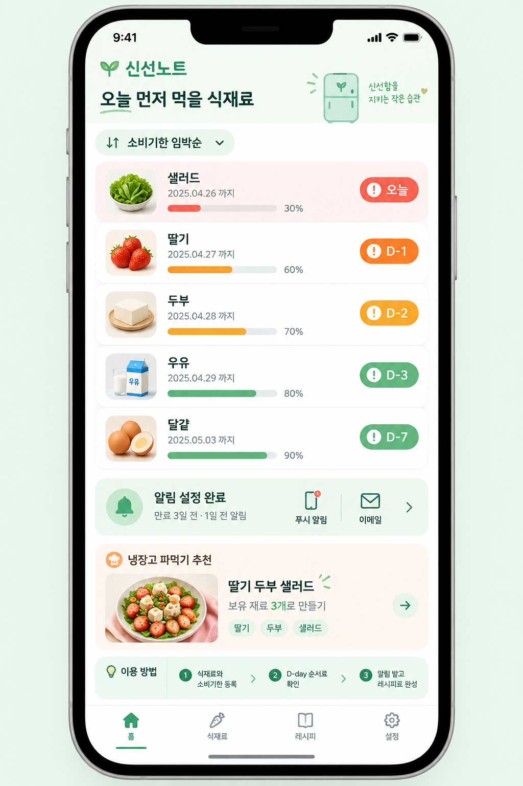

서비스 소개
버려지는 음식 없이 신선하게 관리하는 일상
혼자 살다 보면 냉장고 깊숙이 넣어둔 식재료를 잊어버려 버리게 되는 일이 잦습니다. 신선노트는 등록한 식재료의 남은 기한을 보기 쉽게 정리하고 제때 소비할 수 있도록 안내합니다.

주요 기능
-
소비기한 D-day 정렬
임박한 날짜 순서대로 식재료를 자동 정렬하여 무엇을 먼저 먹어야 하는지 한눈에 보여줍니다.
-
소비기한 만료 전 리마인드
기한 만료 3일 전과 1일 전에 맞춰 푸시 알림과 이메일로 잊지 않게 알려줍니다.
-
냉장고 파먹기 레시피 매칭
기한이 얼마 남지 않은 재료들을 조합해 만들 수 있는 간단한 한 끼 레시피를 제안합니다.
이용 방법
- 구입한 식재료 이름과 소비기한을 간편하게 등록합니다.
- 메인 화면에서 디데이 순으로 정리된 보관 목록을 확인합니다.
- 만료 전 알림을 받고 추천 레시피로 남김없이 식사를 완성합니다.